Наталья Мудрюк · каллиграф-художник
Каллиграфия,
которая дарит эмоции
Каллиграфия от Натальи Мудрюк превращает обычные слова в произведения искусства. Подарите себе и близким эмоции с помощью красивого письма.
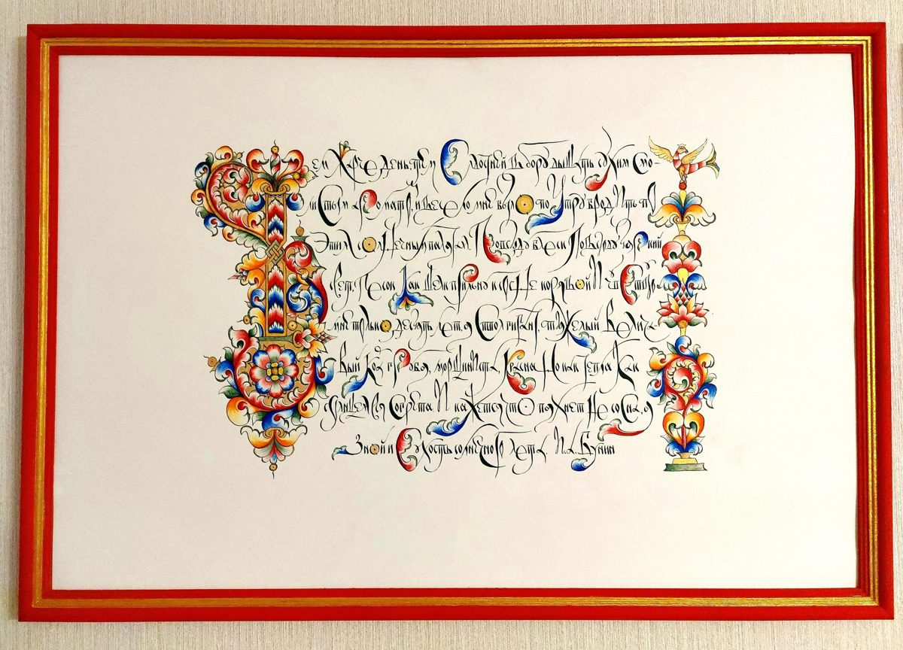

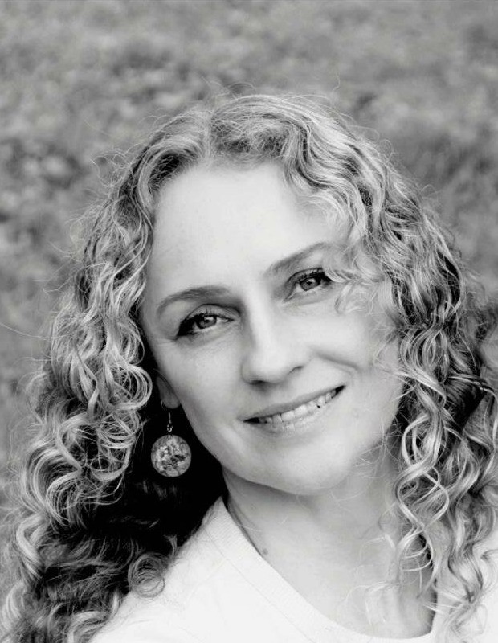
Наталья
Мудрюк
каллиграф-художник · Сочи
Наталья Мудрюк — каллиграф-художник из Сочи. Она пишет пером, тушью и красками, работает с русской вязью, гуслицким стилем и древнерусской скорописью.
Каллиграфия для неё — тёплый, человеческий язык. Слова, написанные от руки, хранят интонацию и становятся подарком, который остаётся рядом.
Самая личная её работа — портрет мамы, целиком написанный буквами: в строки вошло всё, что Наталья помнит о маме. Такие каллиграфические портреты она создаёт и на заказ.
Каллиграфия превращает обычные слова в произведения искусства.
Профильное
- 2023–2025Самообразование и частные учителя
Готика фрактура, тиснение, английский курсив, устав, росчерки.
- 2024Школа исторической каллиграфии
Древнерусская каллиграфия.
- 2021–2025Школа ремёсел и народной культуры
Древнерусская вязь, скоропись, историческая вязь, мезенская роспись, акварельная живопись, основы шрифтовой композиции.
- 2021–2024Центр искусства каллиграфии «От Аза до Ижицы»
Цветоведение, колористика, базовые основы композиции, Буслаевская псалтирь.
Непрофильное
- 2008Межотраслевой институт повышения квалификации и переподготовки руководящих кадров и специалистов РЭА им. Г. В. Плеханова
Оценка стоимости предприятия.
- 2002Московский государственный университет экономики, статистики и информатики
Экономист, специальность «Финансы и кредит».
Работы находятся
- в фонде МБУК «Славянский историко-краеведческий музей», г. Славянск-на-Кубани;
- в фонде Оренбургского областного музея изобразительных искусств, г. Оренбург.
Проекты
Один из кураторов ежегодной выставки славянской письменности и каллиграфии «Родное», г. Сочи.
Услуги
Каллиграфия для личных поводов и событий — от одной строки до целой истории.
-
01
Написание признаний
Слова, которые хочется сказать лично.
-
02
Составление меню
Каллиграфическое оформление меню.
-
03
Подписи на дипломы и карточки
Именные подписи, выполненные от руки.
-
04
Мастер-классы по каллиграфии
Практика письма пером.
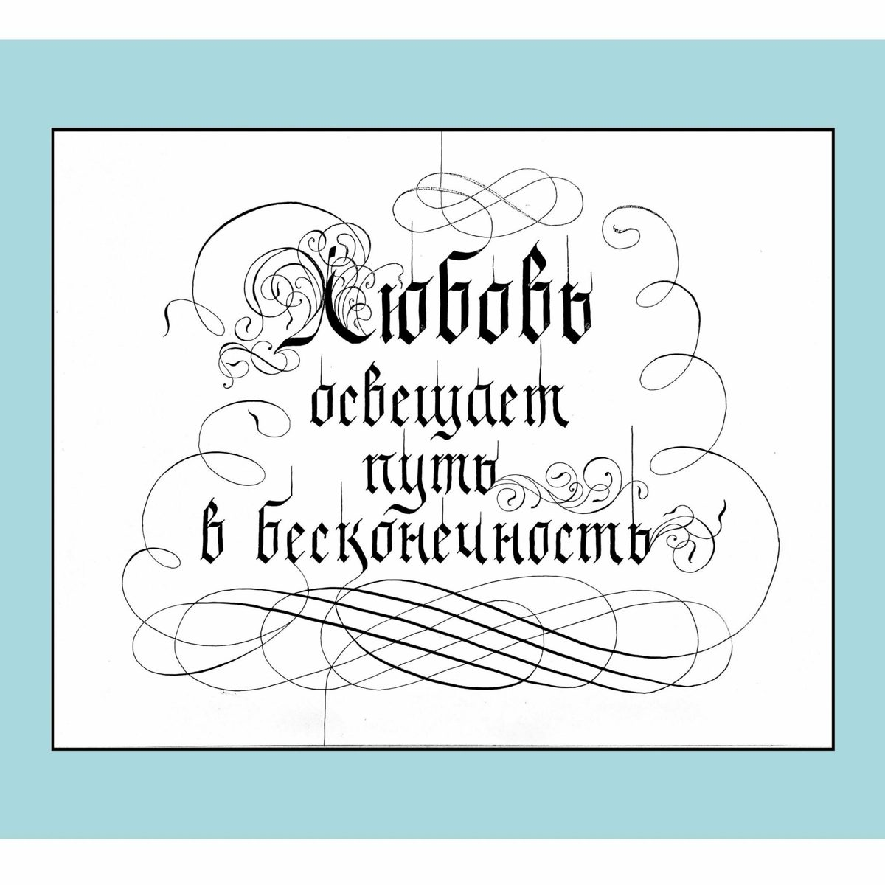
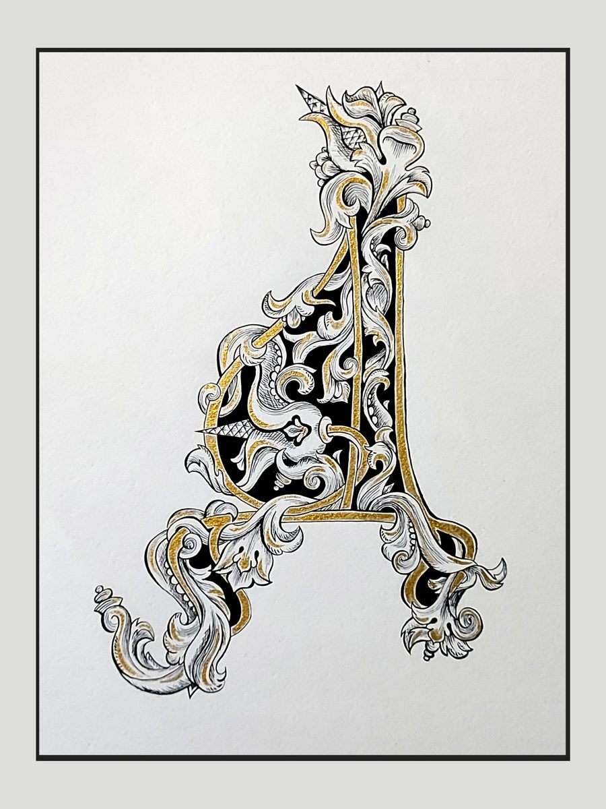
Карточки рассадки
и конверты
Карточки, конверты и подписи, оформленные вручную.
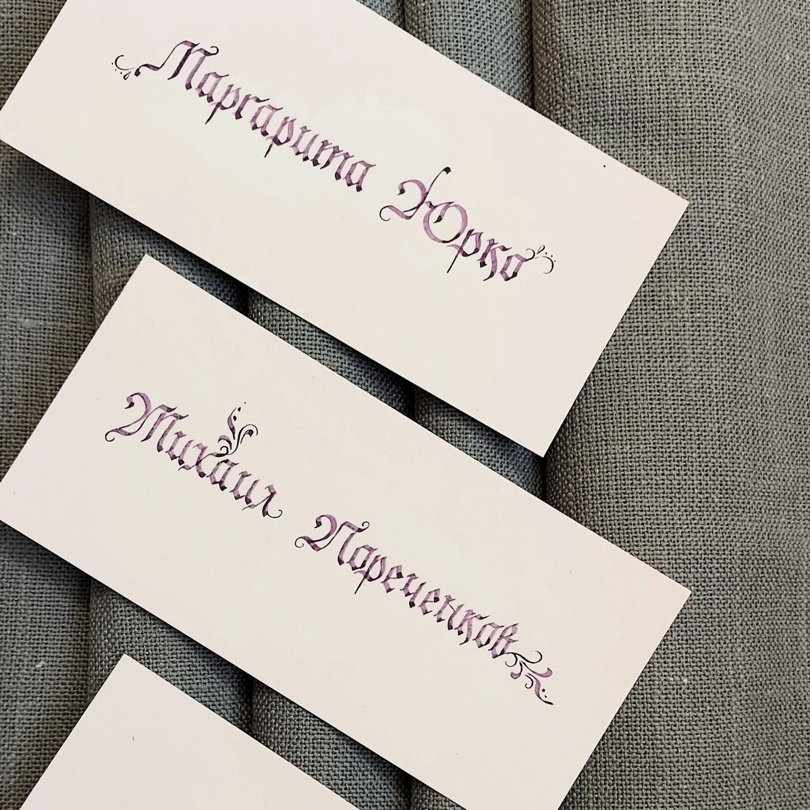
Цены
Прайс-лист мастерской. Стоимость указана «от».
-
Карточки рассадки
Цена за штуку · с теснением 200 ₽ · готика 100 ₽
от100 ₽
-
Принт вязью
Разработка дизайна слова или фразы в стиле русской вязи, в векторе.
от1 000 ₽
-
Личный мерч с профилем
Разработка принта.
от1 500 ₽
-
Каллиграфический портрет
Цена зависит от числа строк и сложности.
от20 000 ₽
Личный мерч
Личный мерч с профилем
Разработка принта от 1 500 ₽ в предложенном стиле. Цена зависит от сложности и объёма работы, то есть от количества текста.
Перед заказом уточняйте характеристики и комплектацию у Натальи.
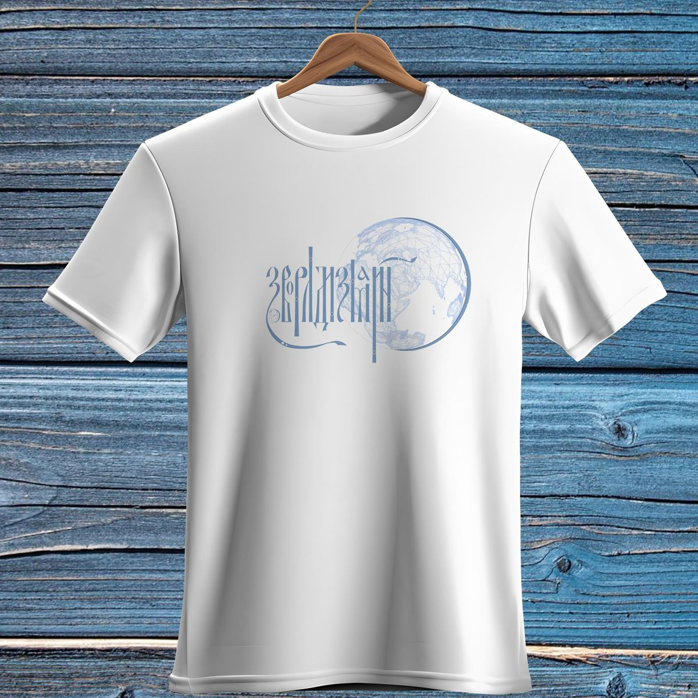
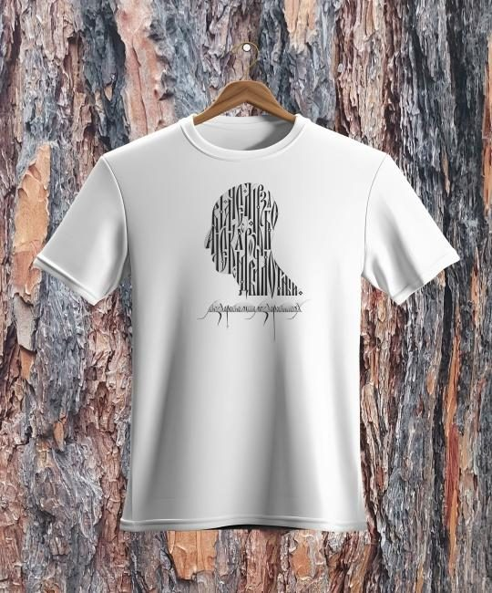
Работы
Каллиграфические работы Натальи Мудрюк: русская вязь, древнерусские стили, акварель и золото.
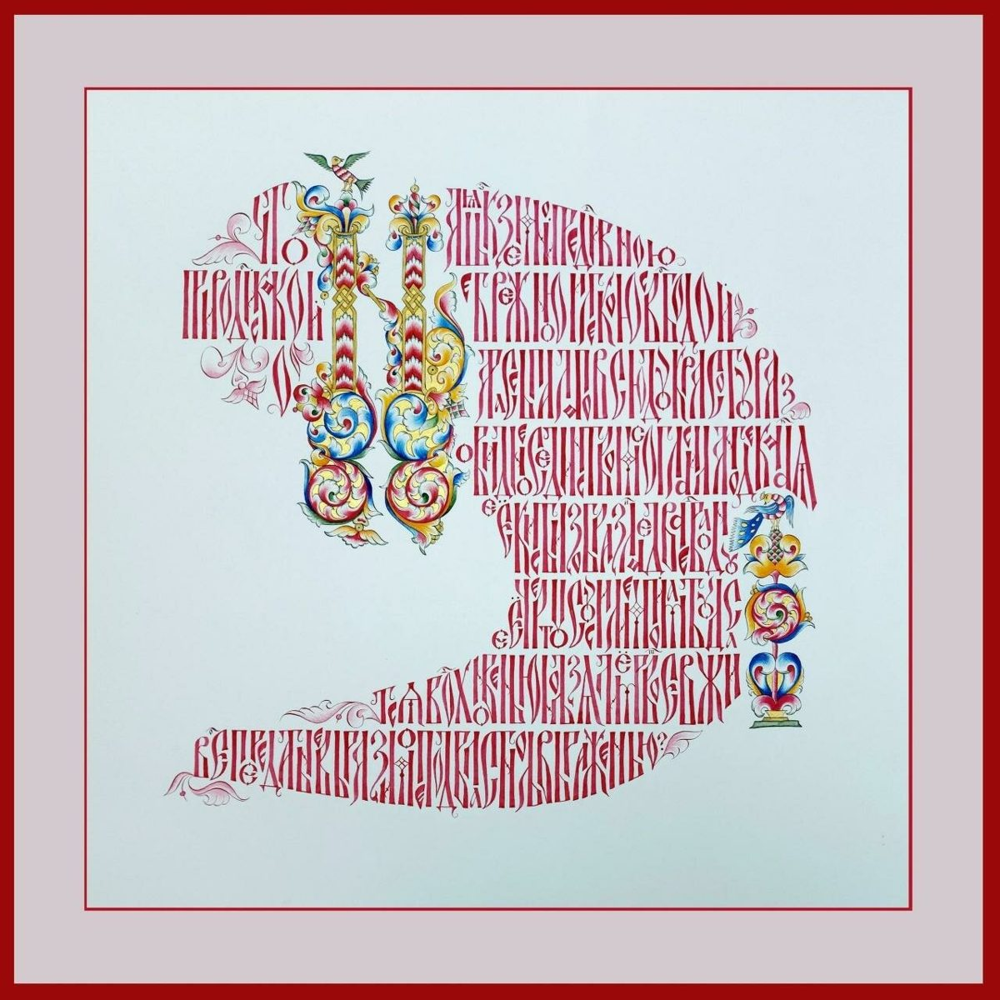
«Невыразимое»
Материалы: бумага 100% хлопок, акварель, золотая краска, кисть, остроконечное перо. Каллиграфия: русская вязь.
Орнамент: инициал (буквица) «Н» и маргинальное украшение в гуслицком стиле. Так оформляли рукописные книги одного из центров старообрядчества.
Текст: отрывок из стихотворения В. А. Жуковского «Невыразимое».
Что наш язык земной пред дивною природой?
С какой небрежною и легкою свободой
Она рассыпала повсюду красоту
И разновидное с единством согласила!
Но где, какая кисть ее изобразила?
Едва-едва одну ее черту
С усилием поймать удастся вдохновенью…
Но льзя ли в мертвое живое передать?..
Невыразимое подвластно ль выраженью?..
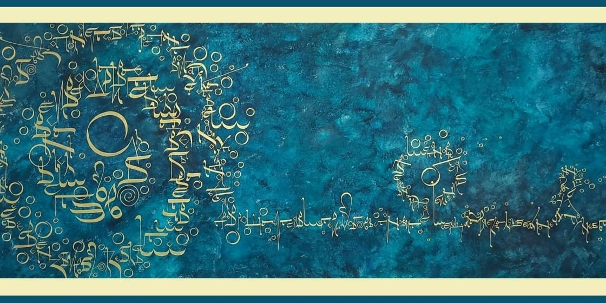
«Дорога к Солнцу»
Бумага, акварель, перо, кисть. Каллиграфия: стиль письма Буслаевской псалтири (конец XV в.) с авторскими элементами. Работа более бирюзовых оттенков моря, чем кажется на фото. Буквы и паспарту блестят.
Участвовала в фестивале «Ё-фест» в мае 2025 в Москве и в спутниковой выставке. Сейчас экспонируется в Сочи на выставке «Авангард». Отправка возможна после 08.01.2026.
Любовь — это смысл. Она всё и вся одаривает смыслом. Разве бывает в чём-то смысл без любви? Без неё всё бессмысленно. Пустота. Любовь заполняет собою пространство и запускает время. Она уплотняется, превращается в материю. Любовь становится жизнью и светом, становится биением сердца. Озаряет, казалось, бесконечную и бездонную пустоту небытия…
«Летний вечер»
Каллиграфический пейзаж в раме и паспарту. Бумага, акварель, остроконечное перо. Техника: каллиграфия, древнерусская скоропись XVII в.
Текст: отрывок из стихотворения Ф. Тютчева «Летний вечер».
Уж солнца раскалённый шар
С главы своей земля скатила,
И мирный вечера пожар
Волна морская поглотила.
Ф. Тютчев
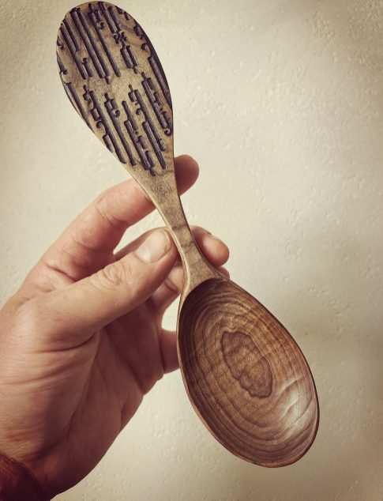
Ложка «Карел кору ел»
Эти столовые приборы создаёт мастер Пётр Парфёнов по эскизам Натальи. Все его работы выполнены традиционным ручным способом. Ложечка вырезана из рябины, каждая пронумерована и подписана. Ложки прошли бережную обработку: запечены, пропитаны натуральным льняным маслом и покрыты пчелиным воском. Это не просто аксессуар, а настоящий предмет с русским духом: тёплый, живой и неповторимый.
За названием «Карел кору ел» скрывается правда: в голодные годы жители севера Карелии добавляли в муку кору сосен, для объёма выпекаемого хлеба.
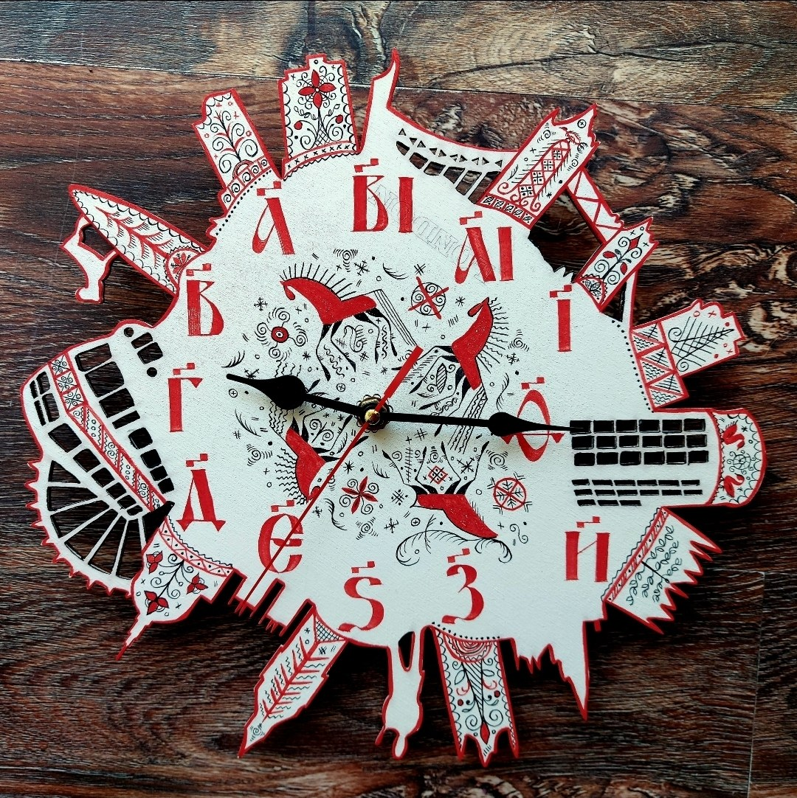
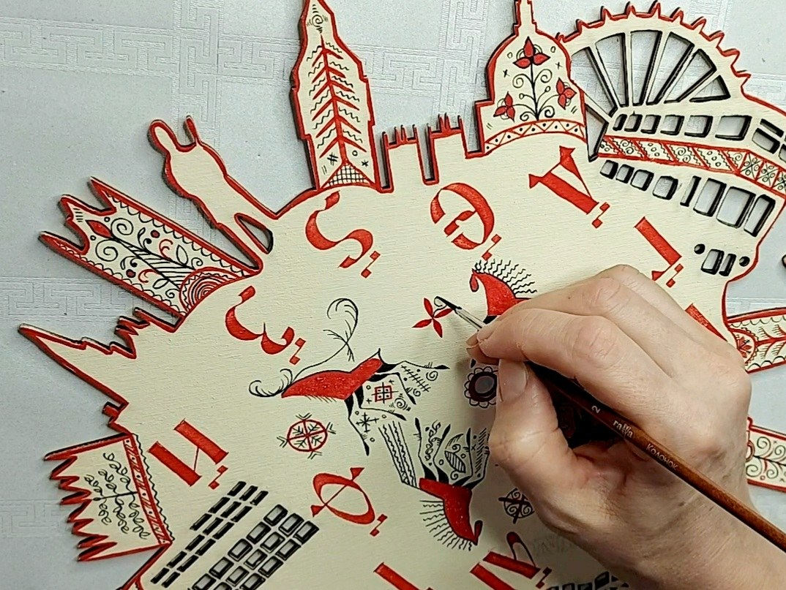
Часы обратного хода «Из чувства противоречия»
Часы обратного хода со славянской цифирью, выполненной уставным письмом (древнейший тип кириллического письма) каллиграфически: буквы не нарисованы, а написаны.
Узнаваемые силуэты Лондона и вся поверхность циферблата украшены мезенской росписью (палащельской), типом росписи домашней утвари, сложившимся к концу XIX века в низовьях реки Мезень Архангельской области. Элементы росписи использованы нетипично.
Материалы: фанера 3 мм толщиной и около 31 см в самом широком месте, темперная краска, часовой механизм на батарейке.
Этот экземпляр будет доступен не ранее ноября 2026 года, так как будет экспонироваться на выставке в Москве. Под заказ Наталья распишет аналогичные. В наличии силуэты Сиднея и Майами.
Часть работ — в наличии и в раме, часть — в музеях и на выставках.
Письма и поздравления
Письма, бланки писем, поздравления, письма от Деда Мороза взрослым, учителю.
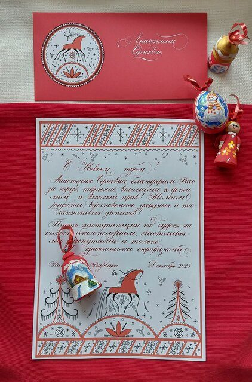
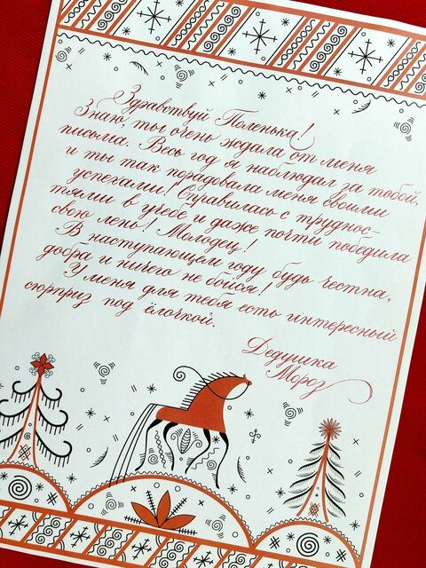
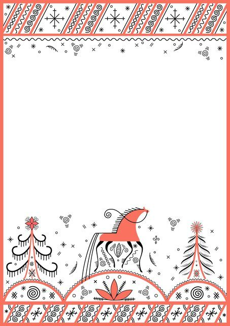
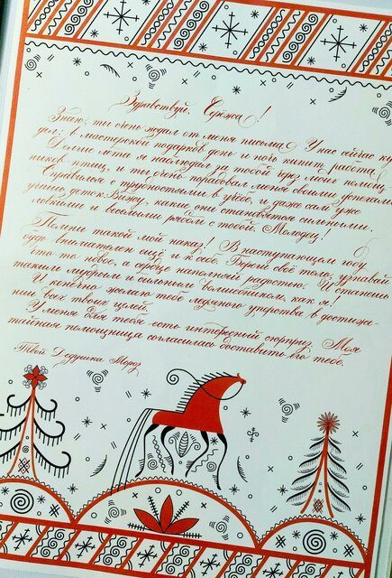
Почему выбирают
Индивидуальное и душевное исполнение, способность вызывать удивление и восторг. Каждый заказ — уникальное произведение искусства, которое порадует вас и ваших близких.
Подари Эмоцию · Сочи
Контакты
Напишите — и слова станут подарком
Расскажите, для кого и по какому поводу нужна работа. Наталья ответит в Telegram.
Написать в TelegramСочи